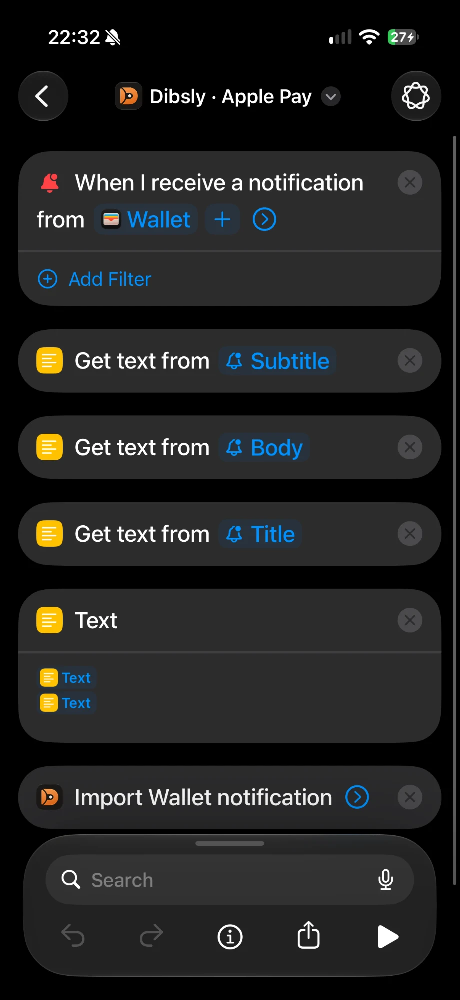
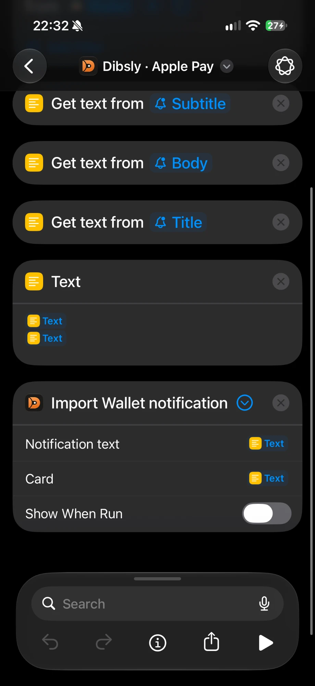
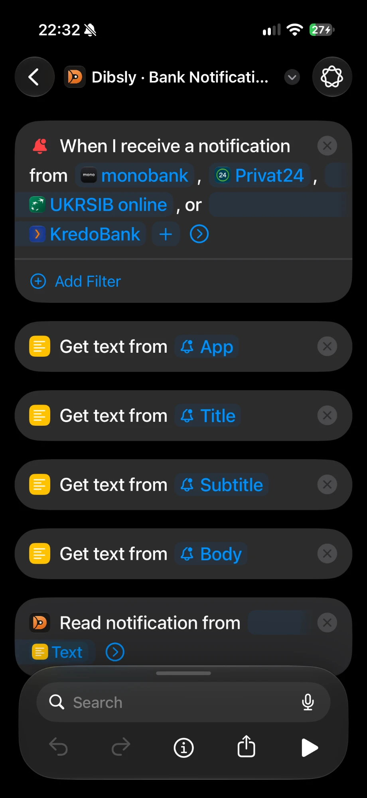
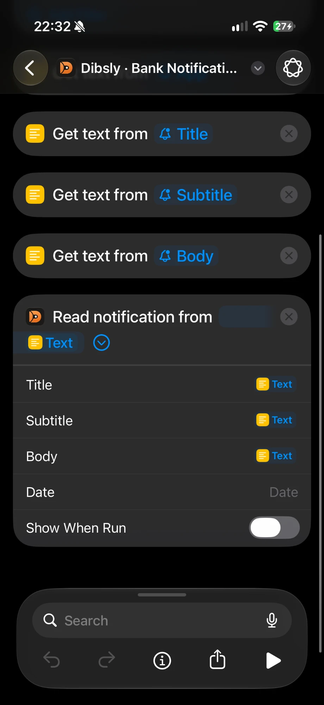

Перші кроки
- Встанови Dibsly з App Store і пройди знайомство: мова, основна валюта, перший рахунок.
- На кроці «Твої банки» підключи monobank або обери виписку свого банку — історія підтягнеться одразу.
- Акаунт не обов'язковий. Увійти з Apple можна будь-коли пізніше — у профілі на Головній.
- Далі налаштуй, щоб нові витрати записувалися самі: Apple Pay і, з Premium, сповіщення банку.
Apple Pay через «Команди»
Кожна оплата Apple Pay стає чернеткою в Dibsly: перевір суму й категорію і збережи одним дотиком. Безкоштовно, з будь-якою карткою.
- У Dibsly відкрий Налаштування → Автоматизація операцій → Apple Pay і натисни Установити автоматизацію.
- У застосунку «Команди» відкрий вкладку Автоматизація, знайди Dibsly · Apple Pay і переконайся, що вона ввімкнена й виконується одразу, без запиту.
- Перша оплата кожною карткою попросить обрати її рахунок у Dibsly; далі він запам'ятовується.
Налаштувати вручну: нова автоматизація «Сповіщення» від застосунку Wallet, «Виконувати одразу». Дії: «Отримати текст» з Subtitle, Body і Title, «Текст» з двома отриманими текстами, далі дія Dibsly Import Wallet notification: Notification text — текст, Card — назва картки, «Показувати під час виконання» вимкнено.


Нічого не приходить? Перевір, що Wallet може показувати сповіщення (Параметри iOS → Сповіщення → Wallet). Якщо ввімкнені й сповіщення банку, одна покупка лишається однією чернеткою.
Сповіщення банку Premium · iOS 27
Пуші будь-якого банку — покупки, поповнення, перекази — Dibsly читає з AI і робить з них чернетки.
- У Dibsly відкрий Налаштування → Автоматизація операцій → Сповіщення банків і натисни Установити автоматизацію.
- У «Командах» відкрий автоматизацію Dibsly · Bank Notifications і в пункті «Коли я отримую сповіщення від» обери застосунки своїх банків: monobank, Privat24, UKRSIB online, KredoBank чи будь-які інші.
- Переконайся, що автоматизація виконується одразу, а в дії Read notification вимкнено «Показувати під час виконання».
- Дозволь AI в Dibsly, коли він попросить: без цього сповіщення не прочитати.


Виписки банків і monobank
- monobank напряму: створи персональний токен на api.monobank.ua і встав його в Dibsly: Налаштування → Імпорт та експорт → Підключити monobank. Токен дає доступ лише на читання й лишається на цьому iPhone.
- Виписка: у застосунку банку збережи виписку за потрібний період — PDF (monobank ще CSV чи XLS) — і поділись нею з Dibsly або відкрий її в Налаштування → Імпорт та експорт → Виписка банку. Підтримуються monobank, PrivatBank, UKRSIBBANK і KredoBank.
- Перевір перегляд: рахунок, кількість операцій і перекази між твоїми рахунками — і натисни Додати й продовжити. Те, що вже є в Dibsly, не задвоїться.
- Будь-який інший банк Premium: дай виписку своєму ChatGPT чи Claude, підключеному до Dibsly, і попроси записати її. Див. ChatGPT і Claude.
Бренди й категорії
- Бренд одним дотиком: записуючи витрату, відкрий категорію й перемкнись на Бренди — логотипи магазинів, кав'ярень, перевізників і сервісів, розкладені по твоїх категоріях. Дотик пише назву бренду й вибирає категорію; утримай бренд, щоб вибрати іншу.
- Почни писати назву в нотатці — «сіл», «мак», «wolt» — і Dibsly запропонує бренд по разу на кожну категорію, куди ти його записував.
- Dibsly вчиться на твоїх записах: бренд іде туди, куди пішло найбільше твоїх операцій із ним, а в назві лишається твоє написання. Одна інша категорія разово його не змінює.
- Перенести назавжди: Налаштування → Бренди, торкнись бренду й вибери категорію (або перетягни його на категорію). Далі він завжди йде туди — і з виписок, і з чернеток — і зберігається в бекапах, синхронізації та експорті CSV. «Повернути автоматично» скасовує перенесення.
Інвестиції
- Увімкни вкладку «Інвестиції» в Налаштуваннях, якщо її ще немає.
- Збережи звіт брокера: Interactive Brokers — Activity Statement, Freedom Finance — звіт брокера у XLSX чи PDF.
- Відкрий Налаштування → Імпорт та експорт → Звіт брокера і обери файл. Dibsly розбере покупки, продажі, дивіденди з утриманим податком і поповнення.
Переїзд з іншого застосунку
Dibsly імпортує експорт Monefy і власні CSV Dibsly. У Monefy експортуй дані в CSV, потім у Dibsly відкрий Налаштування → Імпорт та експорт → CSV-файл → CSV Monefy. Рахунки, категорії, валюти й перекази перенесуться, а перед збереженням Dibsly покаже, що саме додасть.
Спільні рахунки Premium
- Увійди в акаунт Dibsly: профіль на Головній → Увійти з Apple.
- Відкрий Профіль → Спільний доступ → Запросити за посиланням і надішли посилання.
- Друга людина відкриває посилання на iPhone з Dibsly й натискає «Приєднатися». Далі обери, який рахунок зробити спільним.
- Досить Premium в одного учасника. Вийти можна будь-коли там само, у «Спільному доступі».
Сайт my.dibslyapp.com Premium
Відкрий my.dibslyapp.com на комп'ютері й увійди в той самий акаунт Dibsly, що й на iPhone: з Apple, Google або поштою й паролем. Там історія з пошуком, аналітика, план, календар і чернетки; зміни з'являються й на телефоні.
ChatGPT і Claude Premium
- На сайті відкрий Підключити ШІ: там адреса підключення https://my.dibslyapp.com/mcp і кроки для кожного асистента.
- Claude (claude.ai, застосунок): Налаштування → Конектори → додати власний конектор за адресою вище, далі увійди в Dibsly (Apple, Google або пошта й пароль) і дозволь доступ.
- ChatGPT: Налаштування → Застосунки → Додатково → режим розробника, далі додати застосунок за адресою вище й увійти в Dibsly так само. Доступність залежить від тарифу OpenAI.
- Питай словами: «скільки я витратив на кафе цього місяця?», «ось виписка, запиши». Зміни асистент записує лише після твого «так», і кожну можна скасувати в журналі AI на сайті.
Резервні копії й новий iPhone
- Налаштування → Резервні копії та відновлення: обери папку в iCloud Drive чи підключи Google Drive, придумай пароль відновлення й увімкни автоматичні копії.
- Збережи пароль у менеджері паролів: без нього копію не відкрити, і Dibsly не може його скинути.
- На новому iPhone встанови Dibsly, обери Відновити мої дані й найновішу копію — або просто ввійди в акаунт Dibsly, якщо в тебе є синхронізація (Premium).
Premium і скасування
Premium додає синхронізацію й сайт, ChatGPT і Claude, спільні рахунки, сповіщення будь-якого банку, категорії від AI й до 300 чеків на місяць. Перші 7 днів безкоштовно. Оформити — в профілі на Головній або на екрані Premium.
Скасувати: Параметри iOS → твоє ім'я → Підписки → Dibsly, щонайменше за 24 години до кінця періоду. Коли Premium закінчується, нічого не видаляється.
Не знайшов відповіді? Підтримка або dibslysupport@gmail.com.